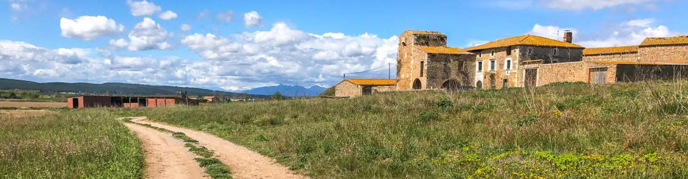

Ruta · Montgrí
El mes destacat d’aquesta ruta familiar són les vistes panoràmiques al Canigó Nord i la banda sud del massís del Montgrí, juntament amb l’imponent masia fortificada Mas de Vilanera i les restes de…